demo/build_demo.py 程序化生成，QC 由 demo/verify.py 独立复测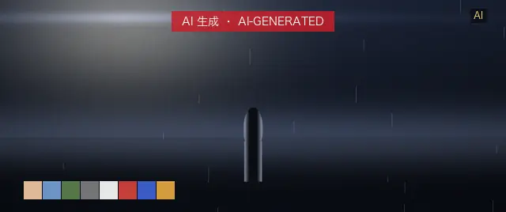
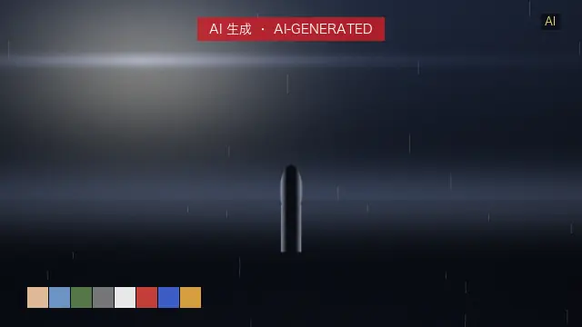
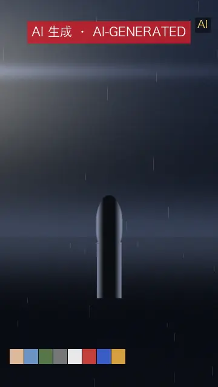
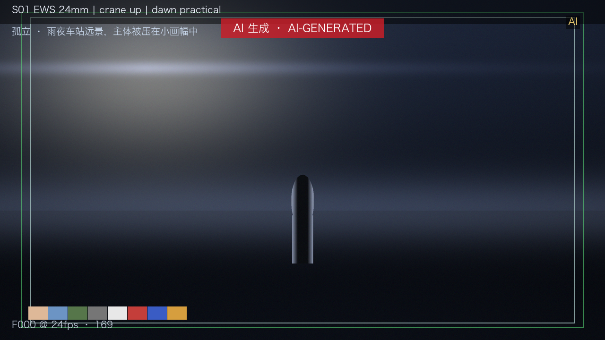
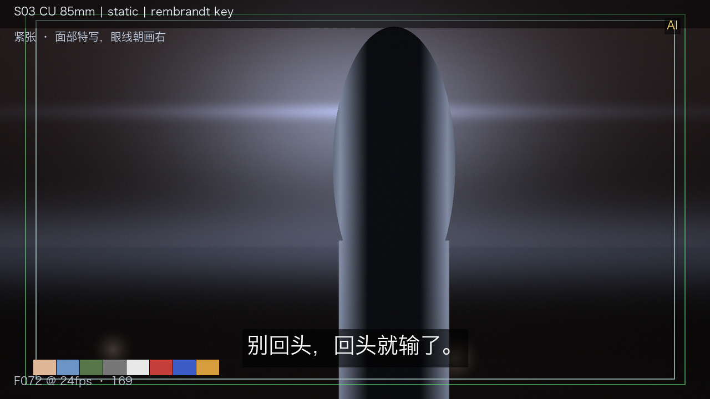
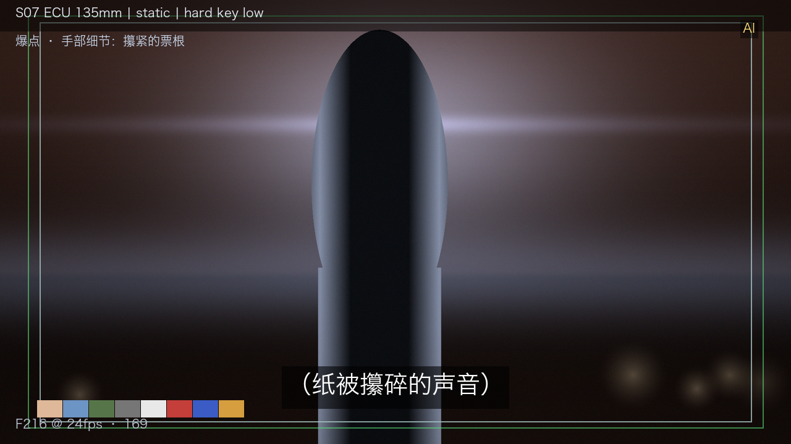
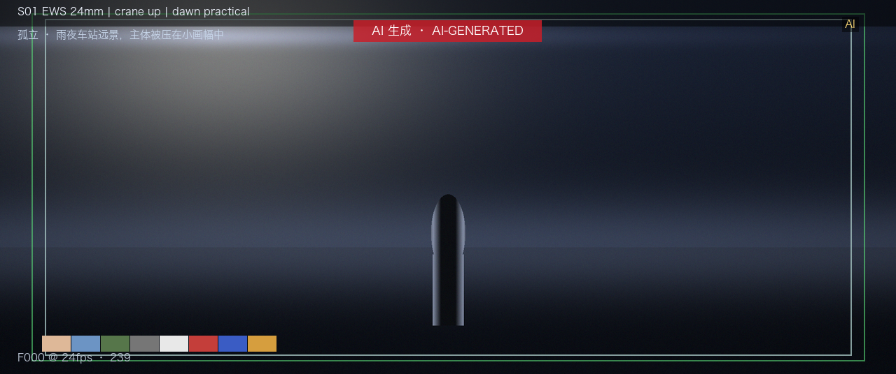
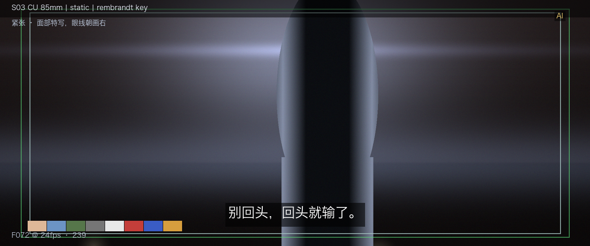
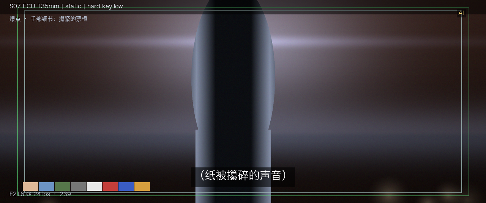
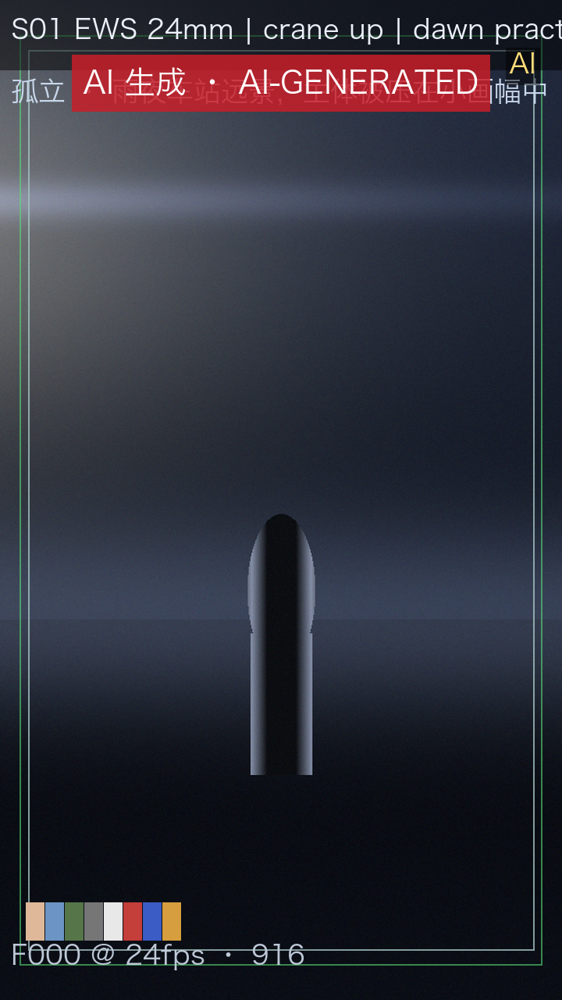
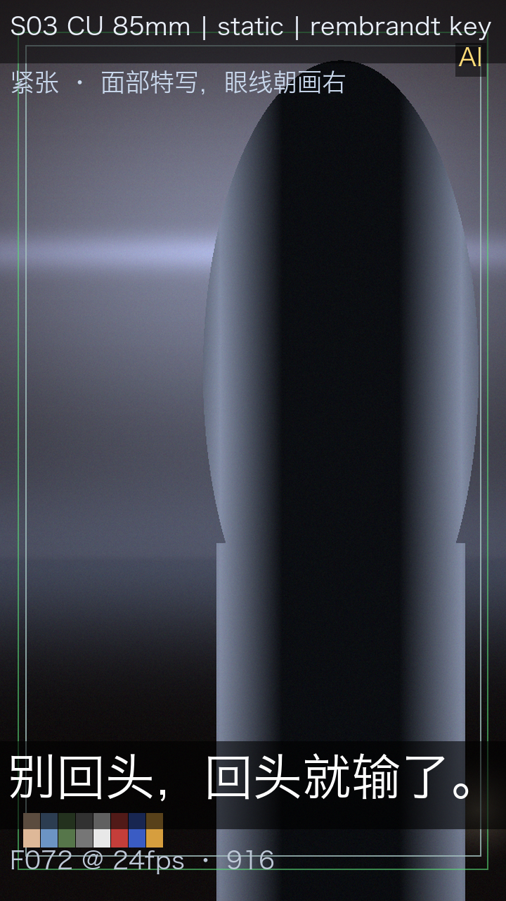
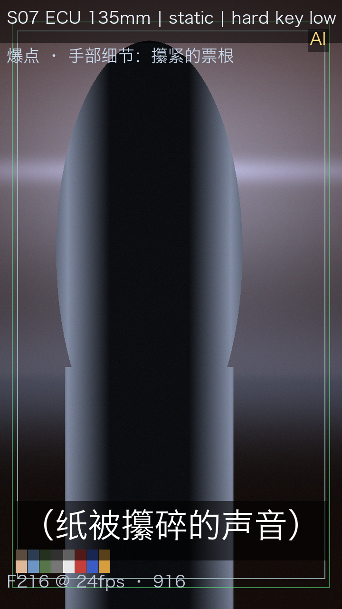
| 层 | LUFS | 真峰值 dBTP |
|---|---|---|
| dialogue | -19.6 | -6.17 |
| music | -21.25 | -10.61 |
| sfx | -17.54 | 3.28 |
| ambience | -21.15 | -6.6 |
| 项 | 值 |
|---|---|
| 主母版 | 2.39:1 · 24fps · Rec.709 SDR · 24-bit 48 kHz |
| 音频 | −23.0 LUFS / ≤−1 dBTP（EBU R128；B-21） |
| AI 标识 | 起始 2 秒显式 + 全程角标 + 元数据隐式（B-71） |
| 字幕 | 2 条 · 每条 5/6–7s · ≤23 字符/行 · ≤2 行 |
| 头尾黑场 | 4 帧 / 12 帧（≥1 帧且 ≤1 s，B-37） |
| 可选交付 | 5.1（需确认）· HDR10（可选）· 48fps（可选） |
| 检查项 | 实测 | 规则 | 结果 |
|---|---|---|---|
| 产物存在且非空 | 12/12 | 全部产物存在且大小 > 0 | PASS |
| 音频母版位深/采样率/声道 | 24bit 48000Hz 2ch | 24-bit / 48 kHz / 立体声（B-38） | PASS |
| 响度（独立复测） | -23.00 LUFS | −23.0 LUFS，QC 容差 ±0.2 LU（B-21） | PASS |
| 真峰值（独立复测） | -4.61 dBTP | ≤ −1 dBTP（B-21） | PASS |
| 四层 stem 等长 | frames=576000 | 四路逐帧等长（B-24/M8） | PASS |
| 代理总时长与时基 239 | 编码 288 帧 / 共 12.096s（声明 288 帧 / 12.000s @ 1/24s）/ 标称 42.0ms/帧 | 代理样片：内容帧数与总时长对应母版时间线，偏差 ≤1%（黑场另按时间线资产验证） | PASS |
| 画幅 239 | 640×268 = 2.388 | 目标 2.390（±1%） | PASS |
| 头尾黑场 239 | 亮度 0.00/0.00，声明时长 0.167s/0.500s | 黑场 ≥1 帧（1/24s）且 ≤1 s（B-37）；以母版时间线资产验证 | PASS |
| AI 显式标识 239 | 首个内容帧红色标识像素 4828 | 起始画面显式标识（B-71/EL-11） | PASS |
| 代理总时长与时基 169 | 编码 288 帧 / 共 12.096s（声明 288 帧 / 12.000s @ 1/24s）/ 标称 42.0ms/帧 | 代理样片：内容帧数与总时长对应母版时间线，偏差 ≤1%（黑场另按时间线资产验证） | PASS |
| 画幅 169 | 640×360 = 1.778 | 目标 1.778（±1%） | PASS |
| 头尾黑场 169 | 亮度 0.00/0.00，声明时长 0.167s/0.500s | 黑场 ≥1 帧（1/24s）且 ≤1 s（B-37）；以母版时间线资产验证 | PASS |
| AI 显式标识 169 | 首个内容帧红色标识像素 4585 | 起始画面显式标识（B-71/EL-11） | PASS |
| 代理总时长与时基 916 | 编码 288 帧 / 共 12.096s（声明 288 帧 / 12.000s @ 1/24s）/ 标称 42.0ms/帧 | 代理样片：内容帧数与总时长对应母版时间线，偏差 ≤1%（黑场另按时间线资产验证） | PASS |
| 画幅 916 | 360×640 = 0.562 | 目标 0.562（±1%） | PASS |
| 头尾黑场 916 | 亮度 0.00/0.00，声明时长 0.167s/0.500s | 黑场 ≥1 帧（1/24s）且 ≤1 s（B-37）；以母版时间线资产验证 | PASS |
| AI 显式标识 916 | 首个内容帧红色标识像素 8473 | 起始画面显式标识（B-71/EL-11） | PASS |
| 字幕条数与时长 | 2 条，时长 ['5.50', '5.50']s | 每条 5/6–7 s（B-32） | PASS |
| 中文字符/行 | 最大 23 | ≤23 字符/行（B-33） | PASS |
| 字幕行数 | 最大 2 | ≤2 行（B-32） | PASS |
| 字幕安全区（渲染期几何） | box=[156, 204, 484, 246] | 落在 EBU graphics safe（内缩 5%）内（B-16） | PASS |
| 色卡 ΔE（有损编码后实测） | 最大 ΔE=1.61 | 项目自定 ΔE ≤ 5.0（B-88：无官方统一阈值） | PASS |
| 隐式标识（元数据） | AIGC=True | 元数据含生成合成属性（B-71） | PASS |
| 代理样片声明 | PROXY — NOT A DELIVERABLE MASTER（规范合规模拟样片： | 必须标注 PROXY、不得冒充母版（EL-16） | PASS |
| 门禁 | 结论 | 职责 | 署名 | 时间 | 理由码 |
|---|---|---|---|---|---|
| 剧本门禁 | 通过 | showrunner + 编剧 | S. Chen (showrunner) | D+0 14:20 | G1-SCRIPT-PASS |
| 定妆门禁 | 通过 | 导演 + 角色设计 | L. Zhao (director) | D+1 11:05 | G2-CAST-PASS |
| 分镜门禁 | 通过 | 导演 + 摄影 | L. Zhao / K. Ito (DoP) | D+2 16:40 | G3-BOARD-PASS |
| 成片门禁 | 通过 | 剪辑 + 声音 | M. Park (editor) | D+9 19:10 | G4-PICTURE-PASS |
| 母版门禁 | 通过 | 调色 + QC | R. Ndiaye (colorist) / QC | D+10 10:30 | G5-MASTER-PASS |
| 科目 | 人民币（元） |
|---|---|
| 立项与开发 | 180,000 |
| 生成（云 API，6×30 分钟估算） | 720,000 |
| 精修与合成（混合模式） | 260,000 |
| 声音与配乐 | 90,000 |
| 调色与母版 | 70,000 |
| 合规与权利（含工会程序） | 60,000 |
| 合计 | 1,380,000 |
| 口径 | 估算：按 F-18 抽卡经济性与 F-07 精品区间折算，非报价 |
| 镜 | 景别 | 焦距 | 运镜 | 光位 | 情绪 | 对白 |
|---|---|---|---|---|---|---|
| S01 | EWS | 24mm | crane up | dawn practical | 孤立 | — |
| S02 | MS | 35mm | dolly in | motivated key 3200K | 压迫 | 他最后一次回头时，站台已经空了。 |
| S03 | CU | 85mm | static | rembrandt key | 紧张 | 别回头，回头就输了。 |
| S04 | OTS | 50mm | handheld | back light rim | 对峙 | 你以为你在等车？ |
| S05 | MCU | 85mm | slow push | soft daylight | 松动 | 我在等一个不回来的人。 |
| S06 | LS | 35mm | truck right | practical street | 决断 | 那就别等了，车不会停。 |
| S07 | ECU | 135mm | static | hard key low | 爆点 | （纸被攥碎的声音） |
| S08 | WS | 24mm | crane down | dawn haze | 余韵 | 末班车进站，灯亮了一路。 |
cd demo && python3 build_demo.py 生成全部产物；python3 verify.py 单独跑独立复测（退出码 0 = 全项通过）。